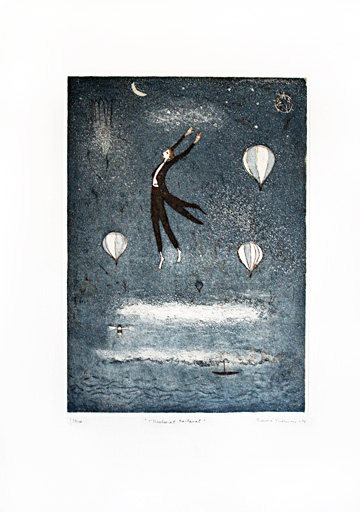
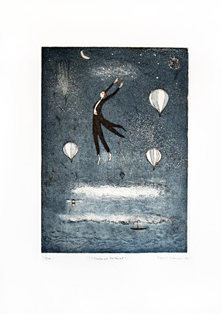

|  UNELMAT KANTAVATUUSI Etsaus-akvatinta, 2014 Vedosmäärä: 100 Kuva-ala: 25 x 35 cm Tuotenumero: 116 Hinta: 320 € |
Yllämainitut hinnat ovat lehtenä, sis.alv. Kehystysneuvoja kauttamme. Ota yhteyttä sähköpostitse ja pyydä esittelyä tai tilaa suoraan.
|  UNELMAT KANTAVATUUSI Etsaus-akvatinta, 2014 Vedosmäärä: 100 Kuva-ala: 25 x 35 cm Tuotenumero: 116 Hinta: 320 € |